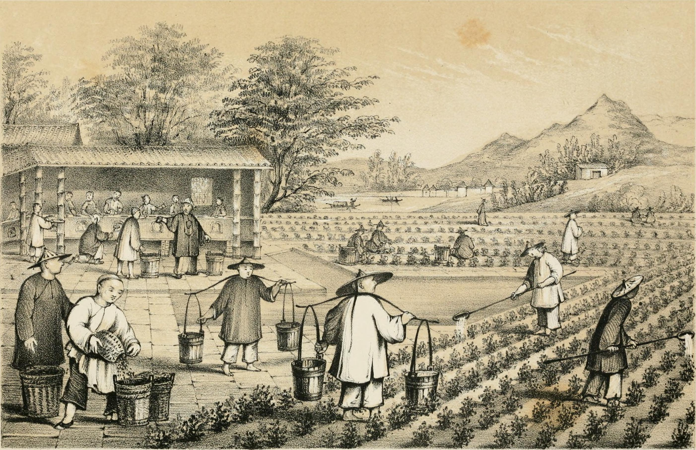
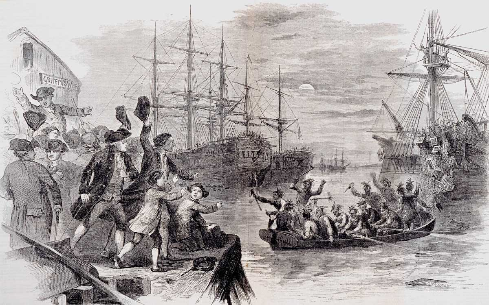

Loose Leaf Tea
The story of loose-leaf tea is shrouded in the mists of ancient times in the Far East, and at least according to Chinese legend, its marvelous appeal as an invigorating beverage was discovered entirely by accident. Chinese legend tells us that the Emperor Shen Nong discovered the exhilarating properties of loose leaf tea in the year 2737 B.C., when he happened to be spending time in the Imperial Garden, and for whatever reason, boiling some water.
At that time, a single leaf from an overhanging wild tea tree fell into his hot water, and on a whim, he tasted the resulting beverage. Feeling pleasantly refreshed and stimulated, he researched the properties of the wild tea tree which had provided this refreshment, and discovered that in addition to its pleasant flavor, it also had certain medicinal properties.
Whether this story is strictly true or not, it's certain that tea-drinking and the appeal of tea leaves was first popularized in the general region of Tibet, China, and Northern India. By the time of the Chinese Tang Dynasty (618-907 A.D.), the classic age of tea prevailed throughout China, and tea-drinking had become so popular that the beverage was hailed as the national drink.
Acceptance of tea in the West
Tea-drinking as a custom was not immediately adopted in the countries of the West, and in fact it was only centuries later that loose-leaf tea really became popular throughout Europe, and later on in America. One obvious reason for this is that there simply was not a great deal of contact between the Eastern world and that of the West.
Another reason for the slow global spread was China's continuing reluctance to share its discovery with the world, and the fact that its government enacted laws restricting the sale of tea beyond the country's borders. It was not until the Qing Dynasty (1644-1911), that restrictions on the sale of tea were finally lifted, and trade with the Western world began in earnest.
India joins China in the tea trade
Beginning in 1610, shipments of Chinese tea commissioned by the Dutch East India Company arrived in Europe, and tea-drinking as a custom spread to Paris, London, Amsterdam and beyond, although its high price limited appeal to the aristocracy. By the middle of the 17th century, the British East India Trade Company was competing with the Dutch for tea trade, and eventually established itself as the dominant trading power with China.
For the next century, Britain ruled tea trade through its British East India Company, but by the 1760's and 1770's, tremendous political upheavals were taking place in the American colonies and elsewhere, and the British monopoly on tea trade was severely disrupted.
In 1823, British Army Major Robert Bruce discovered a native tea bush growing in a Assam, India, and it wasn't long before an employee from the British East India Company was experimenting with the growth of bushes in Assam and in Darjeeling, India. The Darjeeling tea bush experiment was wildly successful, and led to the immediate development of plantations in northeastern India.
American acceptance of tea
After the American Revolution, the United States wanted to establish its own tea trade, and by the 1850's was trading directly with China. Already somewhat popular in America, tea became even more widely accepted when two important discoveries came about – tea bags and iced tea. Both of these innovations occurred just after the turn of the 20th century, and in the case of iced tea, it was at the 1904 St. Louis World's Fair. The invention of the tea bag came in 1903, when it was patented by tea merchant Thomas Sullivan.
From this long and storied history, tea has become the world's second most popular beverage, with only water having greater universal appeal.